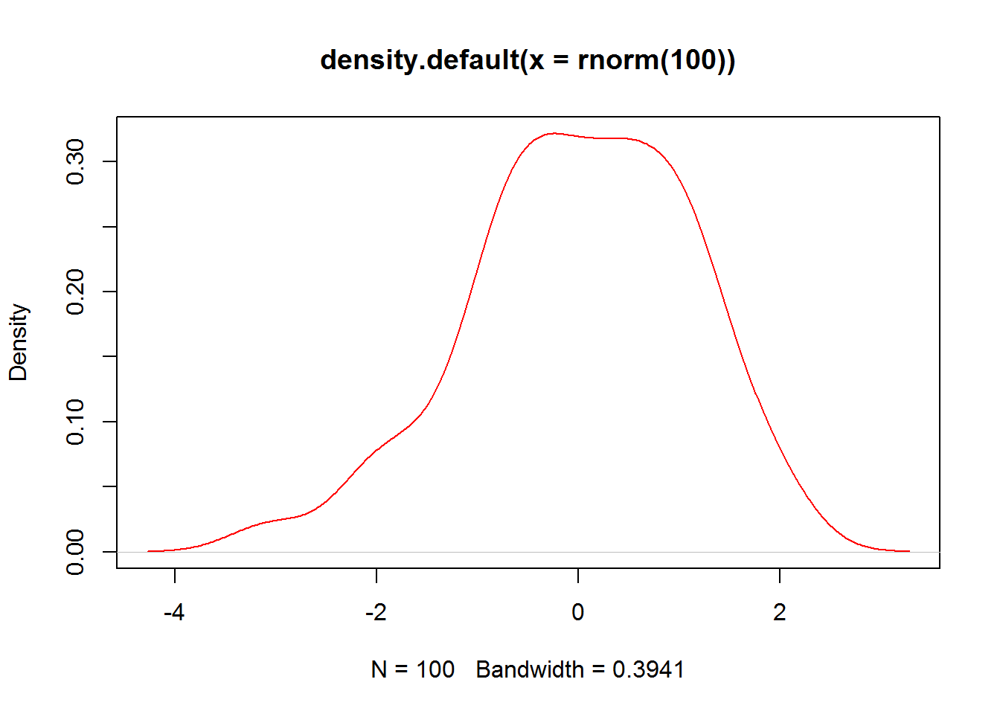

| #### Check graphics system |
r plot(density(rnorm(100)), col = "red") |
|  |
x = 5
x <- 5
assign("x", 5)| #### Commands and Basic Functions |
| function c() |
r x <- c(1, 3, 6, 7) |
(factors are not classic vector objects)
char <- c("8", "edge", "turn8k")
logic <- c(TRUE, FALSE, TRUE, FALSE)dynam <- c(8, "dds", TRUE)
dynam <- c(1, 0, 1, 1, TRUE)
dynam## [1] 1 0 1 1 1Priority Char->integer->Logic
x=function(arg1,arg2,…)
Invocation - function call
args:
Positional: log(x,base)
log(x, 10)## [1] 0.0000000 0.4771213 0.7781513 0.8450980Tagged: log(base=base,x)
log(base = 10, x)## [1] 0.0000000 0.4771213 0.7781513 0.8450980| #### Logical operations |
| >,<,<=,>=,== |
r x = 10 x < 5 |
## [1] FALSE |
r x > 5 |
## [1] TRUE |
r x == 10 |
## [1] TRUE |
+, -, *, /, ^, sin(), cos(), sqrt(), log()
x^10## [1] 1e+10Quiz
x = 10/(5 - 5)
x## [1] Inf| #### Recycling Rule |
r x <- c(2, 4, 5, 3, -4, 0) x * 5 |
## [1] 10 20 25 15 -20 0 |
r y <- c(5, 3) x * y |
## [1] 10 12 25 9 -20 0 |
r z <- c(1, 2, 3, 4) x * z |
## Warning in x * z: longer object length is not a multiple of shorter object ## length |
## [1] 2 8 15 12 -4 0 |
length(x)## [1] 6| #### More basic functions |
| log(), mean(), min(), max(), sum(), prod(), abs() |
r x <- c(3, 4, 6, -7, 8) mean = sum(x)/length(x) mean |
## [1] 2.8 |
x = 2:10
y = 5:1
z = -5:10
w = -5:-10
x## [1] 2 3 4 5 6 7 8 9 10y## [1] 5 4 3 2 1z## [1] -5 -4 -3 -2 -1 0 1 2 3 4 5 6 7 8 9 10w## [1] -5 -6 -7 -8 -9 -10seq(from=,to=,by=)
z = seq(2, 5, 0.5)
x = seq(3, 9.1, 0.1)
y = seq(9, 3, -0.2)
length(x)## [1] 62length(y)## [1] 31x * y## [1] 27.00 27.28 27.52 27.72 27.88 28.00 28.08 28.12 28.12 28.08 28.00
## [12] 27.88 27.72 27.52 27.28 27.00 26.68 26.32 25.92 25.48 25.00 24.48
## [23] 23.92 23.32 22.68 22.00 21.28 20.52 19.72 18.88 18.00 54.90 54.56
## [34] 54.18 53.76 53.30 52.80 52.26 51.68 51.06 50.40 49.70 48.96 48.18
## [45] 47.36 46.50 45.60 44.66 43.68 42.66 41.60 40.50 39.36 38.18 36.96
## [56] 35.70 34.40 33.06 31.68 30.26 28.80 27.30| #### Regular sequence |
| rep(x, times=) |
r x = c("A", "B", "C") rep(x, 4) |
## [1] "A" "B" "C" "A" "B" "C" "A" "B" "C" "A" "B" "C" |
mode(x)
x <- 1:10
y <- x <= -5
mode(x)## [1] "numeric"mode(y)## [1] "logical"mode(mode(x))## [1] "character"| #### Vector indexation |
| R is 1 based language |
r x = 1:20 x[2] |
## [1] 2 |
r x[0] |
## integer(0) |
r x[5:9] |
## [1] 5 6 7 8 9 |
r x[c(3, 7, 8, 9, 20)] |
## [1] 3 7 8 9 20 |
r x[-19] |
## [1] 1 2 3 4 5 6 7 8 9 10 11 12 13 14 15 16 17 18 20 |
r x[-(1:6)] |
## [1] 7 8 9 10 11 12 13 14 15 16 17 18 19 20 |
r x[x > 10] |
## [1] 11 12 13 14 15 16 17 18 19 20 |
r x[TRUE] |
## [1] 1 2 3 4 5 6 7 8 9 10 11 12 13 14 15 16 17 18 19 20 |
r y = c(TRUE, FALSE) x[y] |
## [1] 1 3 5 7 9 11 13 15 17 19 |
vector <- c()
v2 <- c(TRUE, FALSE, TRUE, TRUE, FALSE, TRUE)
vector = c(v2, vector)
vector = c(F, vector)
x = 1:3
x = c(5, x)
x## [1] 5 1 2 3| #### Named vectors |
r x = 1:5 names(x) |
## NULL |
r names(x) <- c("Fisrt", "Second", "Third", "Forth", "First") names(x) |
## [1] "Fisrt" "Second" "Third" "Forth" "First" |
r x["First"] |
## First ## 5 |
length() names() mode()
log(3) == log(3, base = exp(1))## [1] TRUEx = seq(5, 100, 0.1)
x[length(x)]## [1] 100x <- c(-10, 2, 78, 34, -98, 23, 0, -8)
order(x)## [1] 5 1 8 7 2 6 4 3sort(x)## [1] -98 -10 -8 0 2 23 34 78sort(x) == x[order(x)]## [1] TRUE TRUE TRUE TRUE TRUE TRUE TRUE TRUE